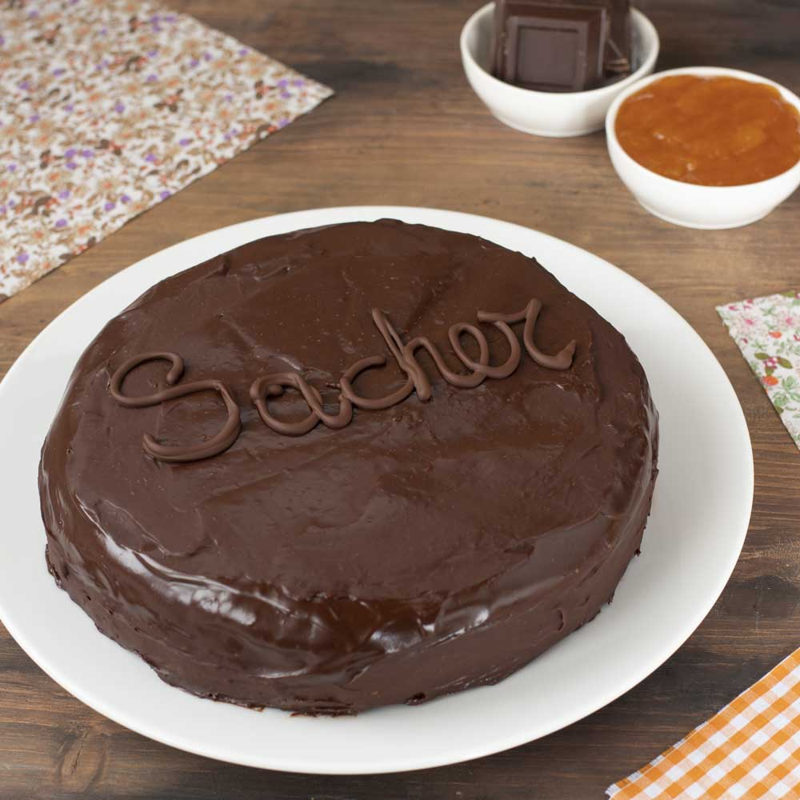

DOLCI E FRUTTA
| PRIMI E SECONDI | MENSA TRIESTE |
|---|
Nel caotico vortice della mensa universitaria, tra tavoli animati da discussioni accese e studenti assorti nei loro libri, un'irresistibile tentazione si diffonde nell'aria. Il banco dei dolci si presenta come un'oasi golosa, offrendo un'ampia varietà di dolci che promettono di alleviare lo stress degli esami imminenti e di addolcire la fatica delle giornate di studio. Muffin fragranti e torte al cioccolato dominano la scena, insieme a biscotti croccanti e pasticcini deliziosamente farciti. Ogni giorno, una nuova selezione di dolci fatti in casa fa la sua comparsa, offrendo una pausa gradita e un momento di piacere per gli studenti impegnati.
ALCUNE DELLE NOSTRE PROPOSTE
| DOLCE | INGREDIENTI |
|---|---|
| Torta della nonna | Farina, Zuchero, Scorza di limone, Burro, Uova, Latte, Zucchero |
| Sacher | Cioccolato fondente, Albumi, Farina, Zucchero, Sale, Tuorli, Burro, Zucchero a velo, Confettura di albicocche |
| Crostata con marmellata di stagione | Farina, Zucchero, Burro, Uovo, Lievito, Marmellata di stagione |
| Biscotti al cioccolato | Farina, Zucchero, Tuorli, Cioccolato, Burro, Lievito per dolci |
| Muffin | Burro, Zucchero, Uova, Vaniglia, Farina, Latte, Lievito |
|
 |
PER CHI PREFERISCE QUALCOSA DI PIU' LEGGERO
Nell'ambiente vivace della mensa universitaria, un'esposizione di variegati colori e fragranze inebrianti accoglie cortesemente gli studenti in cerca di opzioni alimentari salutari. Una ricca selezione di frutta fresca, attentamente disposta su ampi vassoi, si presenta come un'opzione gustosa e nutritiva. I cesti di frutta rappresentano un'alternativa irresistibile per coloro che desiderano uno spuntino leggero e rinvigorente in contrasto con i pasti più sostanziosi serviti nella mensa, fornendo un contributo nutriente essenziale per il benessere fisico e mentale degli studenti immersi nel percorso accademico. La mensa universitaria, in ossequio alla qualità e alla diversificazione del suo servizio alimentare, propone con riguardo particolare una selezione accurata di frutta di stagione.
Per il mese di novembre la mensa propone: